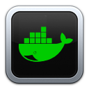

Designing Command-Line Tools People Love

Carolyn Van Slyck
Senior Software Engineer at Microsoft
Often CLIs aren't designed,
functionality is added through happenstance
Design Goals
- Predictable
- Task oriented commands
- Friendly to both humans and scripts
- Creates an SDK as a side-effect
- New contributor launchpad
Introductions
Docker Version Manager
dep


Porter
Recommendations
Command Design
Pick a Grammar
Understand precedent in your ecosystem
- svcat follows kubectl
- dvm followed nvm (for a while)
- dep doesn't follow glide, npm, etc
Let's design a CLI!
¯\_(ツ)_/¯
$ emote shrug
¯\_(ツ)_/¯ copied to the clipboard
$ emote list
NAME VALUE
shrug ¯\_(ツ)_/¯
tableflip (╯°□°）╯︵ ┻━┻
monocle ಠ_ರೃ
$ emote add emoticon gopher --value ï ‚Ä¢·¥•‚Ä¢ î
added custom emoticon "gopher"
$ emote delete emoticon anxious
deleted custom emoticon "anxious"
$ emote add repo funk --url https://example.com/funk.json
added 100 emoticons
$ emote list repos
NAME URL SIZE
funk https://example.com/funk.json 100
$ emote list repos --output json
[
{
"name":"funk",
"url":"https://example.com/funk.json",
"size":100
}
]
Domain vs. Grammar
Use your judgement about the domain when breaking with the grammar
- emote list
- emote shrug
Make tasks easier,
don't simply wrap an API
Frameworks
- spf13/cobra - Commands and Flags
- spf13/viper - Configuration Management
- spf13/afero - File System Abstraction
Thank you, Steve Francia! üíñ
Getting Started with Cobra
package main
import "github.com/spf13/cobra"
func newRootCmd(args []string) *cobra.Command {
cmd := &cobra.Command{
Use: "helm",
Short: "The Helm package manager for Kubernetes.",
}
out := cmd.OutOrStdout()
cmd.AddCommand(
newInstallCmd(nil, out), // helm install
newListCmd(nil, out), // helm list
)
return cmd
}
func main() {
cmd := newRootCmd(os.Args[1:])
if err := cmd.Execute(); err != nil {
os.Exit(1)
}
}
From helm
Read Config Files of Any Type with Viper
type Manifest struct {
Name string `mapstructure:"name"` // mapstructure handles yaml, toml, json, hcl, etc
Version string `mapstructure:"version"`
}
func Load(name, dir string) (*Manifest, error) {
v := viper.New()
if name == "" {
v.SetConfigName(duffle.DuffleFilename)
} else {
v.SetConfigFile(filepath.Join(dir, name))
}
v.AddConfigPath(dir)
err := v.ReadInConfig()
if err != nil {
return nil, fmt.Errorf("Error finding duffle config file: %s", err)
}
m := &Manifest{}
v.Unmarshal(m)
return m, nil
}
From duffle
Replace ioutil with Afero
ioutil.ReadFile("/tmp/gopherfarts.txt")
// vs.
var fs = afero.NewOsFs()
fs.ReadFile("/tmp/gopherfarts.txt")
Package Structure
- cmd/* is the wiring
- pkg/* is the SDK
cmd/* package
- Isolates dependencies on cli frameworks
- Anything in here can't be reused because it's a main package
- This stuff is harder to test properly because it's wiring code
Keep this as small as possible
pkg/* package
- Make functions that are 1:1 the commands in your CLI
- Create happy little packages for everything
- Hide your band-aides and API wrappers in here
Forget this is a CLI and follow your dreams üåà
code generation isn't enough
üö® Logic in Main Package
package main
func (cmd *ensureCommand) Run(ctx *dep.Ctx, args []string) error {
if cmd.examples {
ctx.Err.Println(strings.TrimSpace(ensureExamples))
return nil
}
if err := cmd.validateFlags(); err != nil {
return err
}
p, err := ctx.LoadProject()
if err != nil {
return err
}
sm, err := ctx.SourceManager()
if err != nil {
return err
}
sm.UseDefaultSignalHandling()
...
From dep ensure
üëç Wiring in Main Package
package main
import (
"github.com/deislabs/porter/pkg/porter"
"github.com/deislabs/porter/pkg/printer"
"github.com/spf13/cobra"
)
cmd := &cobra.Command{
Use: "mixins",
Short: "List installed mixins",
PreRunE: func(cmd *cobra.Command, args []string) error {
var err error
opts.format, err = printer.ParseFormat(opts.rawFormat)
return err
},
RunE: func(cmd *cobra.Command, args []string) error {
o := printer.PrintOptions{ Format: opts.format }
return p.PrintMixins(o)
},
}
From porter list mixins
Command Composition
Dependency Injection
Porter's Context
package context
// Context holds references to external systems that need to be captured or modified in tests
type Context struct {
Debug bool
FileSystem *afero.Afero
In io.Reader
Out io.Writer
Err io.Writer
NewCommand CommandBuilder // Abstraction for executing binaries
}
From Pdorter
Yes, context is a horrible name. Call it whateve you like. üòÖ
Composing Porter's SDK
package config
// Config holds flags, env vars and config files contents
type Config struct {
*context.Context
Manifest *Manifest
}
---
package porter
// Porter is the logic behind the porter client.
type Porter struct {
*config.Config
}
---
// Now let's use our CLI's SDK
p := porter.NewPorter()
p.Manifest.Load() // Manifest cames from Config
fmt.Fprintf(p.Out, "\nWriting Dockerfile =======>\n") // Out comes from Context
err = p.FileSystem.WriteFile("Dockerfile", contents, 0644) // FileSystem comes from Context
Using Porter's SDK
p := porter.NewPorter()
// Manifest cames from Config
p.Manifest.Load()
// Out comes from Context
fmt.Fprintf(p.Out, "\nWriting Dockerfile =======>\n")
// FileSystem comes from Context
err = p.FileSystem.WriteFile("Dockerfile", contents, 0644)
Testing Strategies
Test Goals
- Avoid retesting the SDK from the CLI's tests
- Prevent fragile tests that are hard to maintain
- Exercise the CLI validation, output and formatting
- Safety net for new contributors
- Remove excuses for people who refuse to do "frontend stuff" üòá
Porter Flag Validation
cmd/porter/mixins.go
package main
func buildListMixinsCommand(p *porter.Porter) *cobra.Command {
opts := struct {
rawFormat string
format printer.Format
}{}
cmd := &cobra.Command{
Use: "mixins",
Short: "List installed mixins",
PreRunE: func(cmd *cobra.Command, args []string) error {
var err error
opts.format, err = printer.ParseFormat(opts.rawFormat)
return err
},
RunE: func(cmd *cobra.Command, args []string) error {
return p.PrintMixins(printer.PrintOptions{Format: opts.format})
},
}
cmd.Flags().StringVarP(&opts.rawFormat, "output", "o", "table",
"Output format, allowed values are: table, json")
return cmd
}
From Porter
Porter Flag Validation Test
cmd/porter/mixins_test.go
func TestBuildListMixinsCommand_BadFormat(t *testing.T) {
p := porter.NewTestPorter(t)
cmd := buildListMixinsCommand(p.Porter)
cmd.ParseFlags([]string{"--output", "flarts"})
err := cmd.PreRunE(cmd, []string{})
require.NotNil(t, err)
require.Contains(t, err.Error(), "invalid format: flarts")
}
From Porter
Test Context
pkg/context/helpers.go
type TestContext struct {
*Context
input *bytes.Buffer
output *bytes.Buffer
T *testing.T
}
// NewTestContext initializes a configuration suitable for testing,
// with the output buffered, and an in-memory file system.
func NewTestContext(t *testing.T) *TestContext {
...
}
From Porter
Test SDK
pkg/porter/helpers.go
type TestPorter struct {
*Porter
TestConfig *config.TestConfig
}
// NewTestPorter initializes a porter test client,
// with the output buffered, and an in-memory file system.
func NewTestPorter(t *testing.T) *TestPorter {
...
}
From Porter
Capturing Output in Tests
pkg/porter/version_test.go
func TestPrintVersion(t *testing.T) {
pkg.Commit = "abc123"
pkg.Version = "v1.2.3"
p := NewTestPorter(t)
p.PrintVersion()
// Use our test structs to grab the captured output
gotOutput := p.TestConfig.TestContext.GetOutput()
wantOutput := "porter v1.2.3 (abc123)"
if !strings.Contains(gotOutput, wantOutput) {
t.Fatalf("invalid output:\nWANT:\t%q\nGOT:\t%q\n", wantOutput, gotOutput)
}
}
From porter version test
Capturing Output in Tests
pkg/porter/version_test.go
func TestCreate(t *testing.T) {
p := NewTestPorter(t)
p.TestConfig.SetupPorterHome()
err := p.Create()
require.NoError(t, err)
// Tests execute against in-memory afero file system
configFileExists, err := p.FileSystem.Exists(config.Name)
require.NoError(t, err)
assert.True(t, configFileExists)
}
From porter create test
Publishing
References
Thank you

Gopher artwork by Ashley McNamara
licensed under the Creative Commons Attribution-NonCommercial-ShareAlike 4.0 License